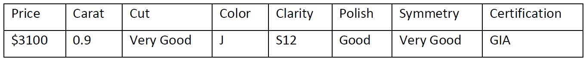

Model 1
A professor of machine learning is planning to get married to his long-time girlfriend. He has never shopped for diamonds before. In the mall, he was confronted with a dizzying array of diamond characteristics, configurations, and pricing. His quick search revealed that diamonds are primarily characterized by 4C viz. Color, Cut, Carat Weight and Clarity besides Polish, Symmetry, and certification. He scrapped the web to collect information from three different wholesaler websites to build his pricing model to ensure he does not get cheated while purchasing the diamond ring. This blog builds a Linear Regression Model to predict the price of the diamond ring of his interest.

Import Dataset : Diamond data
Summary Statistics
The summary of the dataset is shown below. The summary of metric data has the values such as minimum, first quartile, median, mean, third quartile and maximum. However, the summary of non-metric data has the summary of length, class and mode.
## Carat Colour Clarity Cut
## Min. :0.0900 Length:440 Length:440 Length:440
## 1st Qu.:0.3000 Class :character Class :character Class :character
## Median :0.8100 Mode :character Mode :character Mode :character
## Mean :0.6693
## 3rd Qu.:1.0100
## Max. :1.5800
## Certification Polish Symmetry Price
## Length:440 Length:440 Length:440 Min. : 160
## Class :character Class :character Class :character 1st Qu.: 520
## Mode :character Mode :character Mode :character Median :2169
## Mean :1717
## 3rd Qu.:3012
## Max. :3145
## Wholesaler
## Min. :1.000
## 1st Qu.:2.000
## Median :2.000
## Mean :2.318
## 3rd Qu.:3.000
## Max. :3.000Repeated K-fold cross-validation Resampling with various K values (folds)
## Linear Regression
##
## 440 samples
## 8 predictor
##
## No pre-processing
## Resampling: Cross-Validated (2 fold, repeated 3 times)
## Summary of sample sizes: 220, 220, 220, 220, 220, 220, ...
## Resampling results:
##
## RMSE Rsquared MAE
## 194.1752 0.9731325 134.2056
##
## Tuning parameter 'intercept' was held constant at a value of TRUE## Linear Regression
##
## 440 samples
## 8 predictor
##
## No pre-processing
## Resampling: Cross-Validated (5 fold, repeated 3 times)
## Summary of sample sizes: 352, 352, 351, 353, 352, 352, ...
## Resampling results:
##
## RMSE Rsquared MAE
## 179.1762 0.9770606 124.7982
##
## Tuning parameter 'intercept' was held constant at a value of TRUE## Linear Regression
##
## 440 samples
## 8 predictor
##
## No pre-processing
## Resampling: Cross-Validated (10 fold, repeated 3 times)
## Summary of sample sizes: 395, 396, 396, 396, 395, 395, ...
## Resampling results:
##
## RMSE Rsquared MAE
## 176.3451 0.9782798 123.5628
##
## Tuning parameter 'intercept' was held constant at a value of TRUE## Linear Regression
##
## 440 samples
## 8 predictor
##
## No pre-processing
## Resampling: Cross-Validated (439 fold, repeated 3 times)
## Summary of sample sizes: 439, 439, 439, 439, 439, 439, ...
## Resampling results:
##
## RMSE Rsquared MAE
## 124.369 1 124.337
##
## Tuning parameter 'intercept' was held constant at a value of TRUE## Linear Regression
##
## 440 samples
## 8 predictor
##
## No pre-processing
## Resampling: Cross-Validated (5 fold, repeated 3 times)
## Summary of sample sizes: 352, 352, 351, 353, 352, 352, ...
## Resampling results:
##
## RMSE Rsquared MAE
## 179.1762 0.9770606 124.7982
##
## Tuning parameter 'intercept' was held constant at a value of TRUEIn this dataset, 440 samples and 8 predictors are present. The comparison of Resampling parameters among different K values is shown below

From this analysis, it is observable that the accuracy of resampling increases if the K values are high or N-1.
Bootstrapping Resampling
##
## ORDINARY NONPARAMETRIC BOOTSTRAP
##
##
## Call:
## boot(data = pp, statistic = function_1, R = 10000)
##
##
## Bootstrap Statistics :
## original bias std. error
## t1* 0.925436 5.601807e-05 0.00635996## R original bootBias bootSE bootMed
## 1 10000 0.92544 5.6018e-05 0.00636 0.92559##
## The range of bootstrap correlation is 0.8989825 0.947535##
## The mean of bootstrap correlation is 0.9254921##
## The standard deviation of bootstrap correlation is 0.00635996##
## The class of bootstrap correlation is boot
## ## BOOTSTRAP CONFIDENCE INTERVAL CALCULATIONS
## Based on 10000 bootstrap replicates
##
## CALL :
## boot.ci(boot.out = bootstrap_correlation, type = c("norm", "basic",
## "perc", "bca"))
##
## Intervals :
## Level Normal Basic
## 95% ( 0.9129, 0.9378 ) ( 0.9134, 0.9385 )
##
## Level Percentile BCa
## 95% ( 0.9124, 0.9375 ) ( 0.9117, 0.9369 )
## Calculations and Intervals on Original Scale